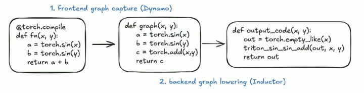
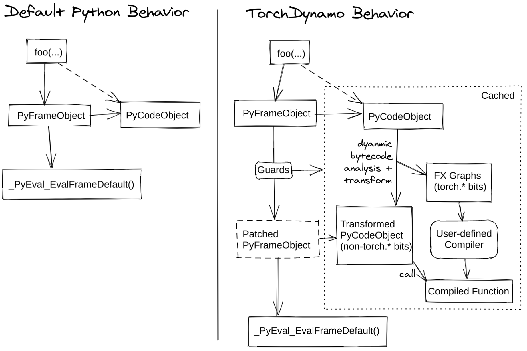
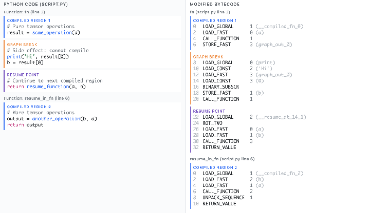
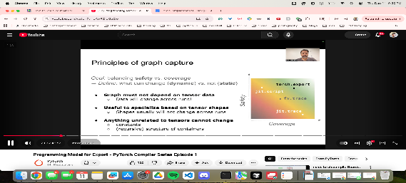
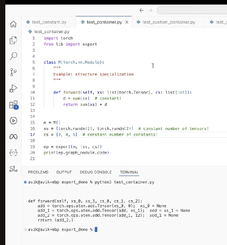

torch.compile — A Manual
Why torch.compile?

PyTorch’s eager mode is flexible and debuggable, but it pays a price: every op goes through the Python interpreter, tensor dispatch, and kernel launch one at a time. torch.compile closes the gap with JAX/XLA-style ahead-of-time compilation — without giving up Python dynamism.
JIT note: Triton has CPU overhead per launch; CUDA Graphs help here. But Triton now also supports AOT kernels, making CUDA Graphs less necessary for pure-Triton workloads.
torch.compilesits above all of this.
Related questions it addresses:
- When can ops be fused?
- How do graph breaks affect performance?
- How does it compare to JAX + XLA?
torch.compile Under the Hood
The compiler pipeline has three logical stages: Get-In (trace Python), Manipulate (rewrite the graph), and Be-ware (pitfalls).
I — Get-In: Hooking into CPython
CPython is both a compiler (to bytecode) and an interpreter (of that bytecode), frame by frame.
A Frame (PyFrameObject) is a snapshot of a function’s state:
- The bytecode itself
- Namespaces — local and global variables
- The execution stack
- Exception state
- Built-ins (
print,len) - Trace/debug hooks
PEP 523 exposes an API for a custom per-function interpreter. If one is installed, CPython will use it instead of the default. Dynamo leverages exactly this API: it defines a new interpreter that traces all PyTorch op calls and builds an FX graph as your code executes.
PyFrameObject (default eval) → PatchedPyFrameObject (Dynamo's eval)The @torch.compile decorator’s only job is to install the scaffolding that passes bytecode, args, and globals to Dynamo on the first call. @torch.compile does not compile anything itself.

FX Graph
torch.fx traces your model symbolically and produces an FX Graph — a pure Python data structure representing the computation as a DAG of nodes. This is the IR that flows into the rest of the compiler:
Python source → Dynamo bytecode analysis → FX Graph → AOTAutograd → Inductor → Triton / C++torch.export also produces an FX Graph, but via a stricter trace that bakes in shapes and constants (more on this below).
Guards — Making Dynamo Resilient
Every time Dynamo traces a function it attaches guards to the compiled artifact: checks on shapes, dtypes, values, and Python object identity that must hold for the compiled version to be reused.
When a guard is violated:
- Runtime overhead — every call checks all guards
- Recompilation — if a guard fails, Dynamo re-traces
Torch Compile adds guards for every user-accessible attribute. Use tlparse (or TORCH_LOGS=guards) to inspect guard overhead.
Dynamic Shapes & Recompilation
Guards + recompilation are the two main contributors to torch.compile being slower than eager in pathological cases. Understanding this lets you diagnose and eliminate the overhead.
| API | Effect |
|---|---|
torch.compile(dynamic=True) |
Dynamo uses symbolic integers for shapes; fewer recompilations |
torch.export(..., dynamic_shapes=...) |
Explicit shape constraints at export time |
torch._dynamo.mark_dynamic(x, dim=0) |
Mark a specific tensor dimension as dynamic |
II — Manipulate: Bytecode Manipulation
Dynamo doesn’t parse Python source — it works at the bytecode level. It walks co_code, intercepts CALL_FUNCTION / CALL_METHOD / LOAD_ATTR instructions that touch torch.Tensor objects, and emits graph nodes for each one. Non-Torch code (pure Python logic) passes through unchanged or causes a graph break.
III — Be-ware: Graph Breaks & Recompilation
Graph Breaks
A graph break occurs when Dynamo encounters code it cannot represent in an FX Graph. It ends the current subgraph, lets the Python interpreter handle that piece, and starts a new subgraph afterwards.
Common causes:
- Data-dependent control flow — Python
if/elsewhere the condition depends on tensor values. Fix: usetorch.cond(),torch.where(), or restructure. .item(),.tolist()— require a CPU↔︎GPU sync, forcing a break.print()statements inside compiled code.- Custom ops (CUDA kernels, CUTLASS, user-defined Triton kernels) — Dynamo treats them as opaque callables.

# Forces a graph break — data-dependent branch
if x.sum() > 0:
y = x * 2
else:
y = x * -1
# Graph-friendly alternative
y = torch.where(x.sum() > 0, x * 2, x * -1)Use torch.compile(full_graph=True) to make Dynamo error out on any graph break — it will tell you exactly where.
Recompilation
Dynamo captures separate graphs for forward and backward passes. The forward FX Graph is used by AOTAutograd to generate the compiled backward. Each forward graph has its own backward counterpart.
The backend is Inductor, which lowers the FX Graph to:
- Triton (default GPU backend) — generates fused CUDA kernels
- C++ (CPU backend)
Under dynamic shapes, Dynamo uses Sympy for symbolic shape arithmetic, allowing a single compiled artifact to handle multiple shapes without recompilation.
Instead of torch.tensor() + 5 (constant scalar), prefer torch.tensor() + torch.tensor(5) to avoid shape-triggered recompilation.
torch.compile + CUDA Graphs
These two are complementary, not alternatives.
torch.compile is a compiler infrastructure: it traces your PyTorch code, generates an FX graph, lowers it through Inductor (defaulting to Triton), and produces optimized kernels with operator fusion.
CUDA Graphs solve a different problem: CPU-side kernel launch latency. Once the GPU work is captured into a graph, the CPU replays it with a single call instead of launching kernels one by one.
Combined workflow:
torch.compileyour model — possibly into multiple subgraphs if there are graph breaks- Wrap the compiled model (+ optimizer step, etc.) in a CUDA Graph capture
- Result: fused Triton kernels running with near-zero CPU overhead
# mode="reduce-overhead" enables CUDA Graphs automatically
model = torch.compile(model, mode="reduce-overhead")
# PyTorch handles the graph capture transparently on the first few iterations
# and replays on all subsequent callsreduce-overhead mode tries to use CUDA Graphs automatically, but it has constraints: no input mutations, static memory layout, limited graph dynamism. You may need to tweak your model slightly to be CUDA Graph-compatible.
Best Practices
Full Graph & Avoiding Graph Breaks
- Use
full_graph=Trueduring debugging to surface breaks immediately - Replace Python control flow with graph-friendly ops:
torch.where,torch.cond - Avoid
.item(),.numpy(),.tolist()inside hot paths - Custom ops show up as opaque callables — wrap them with
torch.libraryif you want Dynamo to trace through them
Handling Dynamic Shapes
# Option 1: tell compile the shapes are dynamic
model = torch.compile(model, dynamic=True)
# Option 2: mark specific dimensions as dynamic
torch._dynamo.mark_dynamic(x, 0) # batch dimension is dynamic
# Option 3: use torch.export with explicit constraints
from torch.export import Dim
batch = Dim("batch", min=1, max=256)
exported = torch.export.export(model, (x,), dynamic_shapes={"x": {0: batch}})Mixing CUDA Graphs with torch.compile
import torch
stream = torch.cuda.Stream()
# Warm-up outside the graph
with torch.cuda.stream(stream):
for _ in range(3):
y = compiled_model(x)
# Capture
g = torch.cuda.CUDAGraph()
with torch.cuda.graph(g):
y = compiled_model(x)
# Replay
g.replay()Reducing Compilation / Recompilation Time
# Cache compiled artifacts to disk — avoids recompilation on restart
import torch._inductor.config
torch._inductor.config.fx_graph_cache = True # Inductor kernel cache# Persist the Dynamo cache across runs
TORCHINDUCTOR_CACHE_DIR=/tmp/inductor_cache python train.pyKnown Limitations (as of 2025)
- DeepSpeed ZeRO — optimizer state sharding uses communication ops that Dynamo can’t graph-capture. Results in graph breaks or silent fallback to eager.
- Gradient checkpointing — checkpointed modules fall back to eager mode silently.
torch.export
torch.export produces a strict, fully-captured FX Graph suitable for deployment (no Python fallback):
- Containers (dicts, lists of tensors) are burned in
- Python constants are burned in
torch.tensor(...)literals are not burned in — they become graph inputs
from torch.export import export, Dim
batch = Dim("batch", min=1, max=256)
exported_program = export(model, (x,), dynamic_shapes={"x": {0: batch}})For models that use dataclasses as inputs:
torch.export.register_dataclass(MyDataClass)
torch.export (strict, static) and torch.trace (lenient, dynamic)
torch.export.register_dataclass enables dataclass inputsCase Studies
Case Study I — Compilation Failed
When torch.compile fails outright, the TORCH_LOGS environment variables are your primary diagnostic tool:
| Goal | TORCH_LOGS value |
|---|---|
| Why is it recompiling? | recompiles |
| Compilation stages | compilation |
| Generated FX graph | graph_code |
| Final kernel code | output_code |
| Where tracing breaks | graph_breaks |
| Guard conditions | guards |
| Performance hints | perf_hints |
| Dynamic shape decisions | dynamic |
| Symbolic sizes in graph | graph_sizes |
| AOT Autograd graphs | aot_graphs |
| Inductor optimization | inductor |
| Inductor scheduling | schedule |
| Everything | +dynamo,+inductor |
TORCH_LOGS=graph_breaks,guards python train.pyCase Study II — Compilation Succeeded but No Speedup (or Regression)
Common root causes:
- Too many graph breaks — the model is running as many small compiled subgraphs stitched together by eager Python; overhead exceeds benefit
- Excessive recompilation — dynamic input shapes are triggering constant re-traces
- Kernel launch latency dominates — model is bottlenecked on CPU launch overhead that Inductor/Triton doesn’t help with (here, add CUDA Graphs)
- Compute-bound, already fast — large matmuls already max out GPU throughput; fusion provides no gain
Diagnostic approach:
TORCH_LOGS=perf_hints,recompiles python train.py 2>&1 | head -100Case Study III — vLLM
vLLM uses torch.compile with PagedAttention and custom CUDA kernels. Key patterns:
- Custom ops registered via
torch.libraryso Dynamo can trace through them dynamic=Trueto handle variable-length sequences without recompilation- CUDA Graph capture for the decode phase (static shape) for near-zero CPU overhead
- Separate compiled graphs for prefill (dynamic) vs decode (static) paths
torch.compile vs JAX + XLA
PyTorch + torch.compile |
JAX + XLA | |
|---|---|---|
| Input IR | FX Graph (via Dynamo) | HLO (High Level Operations) |
| Lowering | FX → Schedule IR → Triton / C++ | HLO → Optimized HLO → LLVM IR / Device IR |
| Execution model | Eager + JIT | Lazy (graph accumulation) |
| Graph capture | Dynamo via bytecode analysis | Trace-based (jax.jit) |
| Compilation trigger | First execution + guard violation | Explicit mark_step() / jit decoration |
| Operator fusion | Vertical + horizontal fusion | Aggressive multi-output fusion, cross control-flow |
| Memory layout | Basic optimization | Aggressive layout transforms (NCHW → NHWC) |
| Algebraic simplifications | Pattern matching | Deep algebraic rewrites, constant folding |
| Key strength | Hide latency (HBM load), vector units, comms behind MXUs | Cost model via OpenXLA / MLIR dialect stack |
XLA uses MLIR to define multiple dialects at different abstraction levels and progressively lowers between them — enabling deep fusion and aggressive memory layout transformations that Inductor doesn’t yet match. PyTorch’s advantage is the flexibility of staying in Python with optional compilation.
References
- Dynamo Overview — PyTorch docs
- inductor/scheduler.py —
can_fuse()/score_fuse()cost model - Dynamo Deep-Dive — PyTorch docs
- CUDAGraph Trees — PyTorch docs
- PyTorch 2 paper — Faster Machine Learning Through Dynamic Python Bytecode Transformation and Graph Compilation
- Blazing Fast GenAI Inference With torch.compile — Richard Zou, Meta